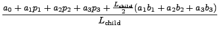

Next: Calculating the Plane Parameters
Up: Example: Plane Fitting
Previous: Example: Plane Fitting
Contents
The perpendicular, and therefore nearest, distance from the plane to the
centre of the cube is calculated. If it is smaller than the radius
of the circumscribing sphere, the plane intersects the sphere,
otherwise it misses. The distance is normalised by dividing it by
the side length of the cube. The normalised distance of a plane
from the centre of a child cube can be calculated simply from the
normalised distance of the plane from it's parent's centre, as shown below.
The plane is defined by the following equation:
where
. Let the child cube have indices
, centre and side length .
The radius of the circumscribing sphere is
. The perpendicular distance
of the plane to the centre of the child cube is
When normalised this becomes
The normalised distance of the centre of the parent from the plane,
where the parent has centre and side length
, is
The child is half the size of the parent, so
. Also the centres of the cubes are
related by the following equation:
and substituting the RHS into equation 5.16 yields
|
 |
 |
|
| |
|
|
(5.18) |
This formula is used to calculate the normalised
distance for a child in terms of that of it's parent, and is fast because
the  values of the term
can be stored as a look-up
table for each set of coefficients
values of the term
can be stored as a look-up
table for each set of coefficients  (i.e. each disparity point).
(i.e. each disparity point).
The normalised distance of the plane from the root cube, which has side
length one and centre
, is
The normalised distances are calculated initially
from equation 5.19 and from
then on using the formula 5.18.
The normalised distances are compared with
 ,
the radius of the circumscribing sphere of a cube with side length one.
This is equivalent to comparing the un-normalised distance with the
circumscribing sphere of the original cube.
,
the radius of the circumscribing sphere of a cube with side length one.
This is equivalent to comparing the un-normalised distance with the
circumscribing sphere of the original cube.
Next: Calculating the Plane Parameters
Up: Example: Plane Fitting
Previous: Example: Plane Fitting
Contents
Philip McLauchlan
2009-01-27